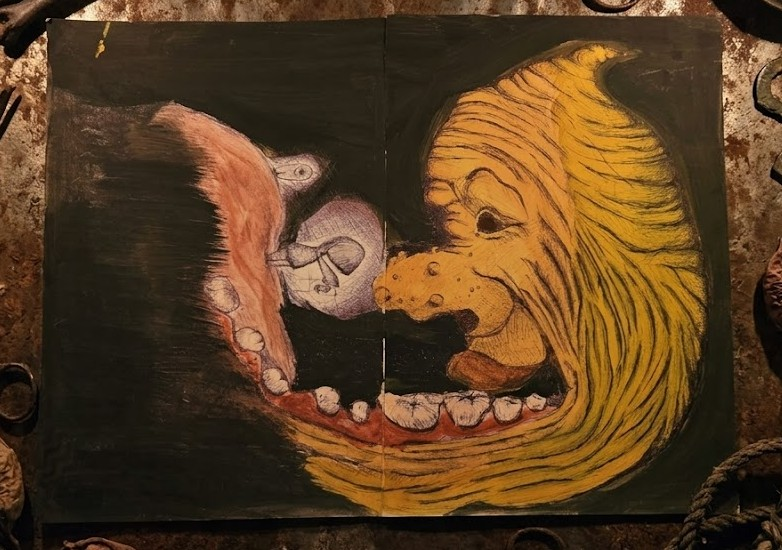

> ANALYSIS_REPORT // CODE: HOGE

The entity captured within the frame exhibits an aggressive spatial distortion. Upon initial viewing, the yellow profile on the right appears to dominate the visual landscape, extending its lower jaw to an unnatural capacity.
As the observer continuous to analyze the details, the geometric boundaries of the canvas begin to lose stability. It is highly advised not to lock eyes with the central pupil for more than forty seconds.
Warning: Digital artifacts have been reported during the rendering of this specific dataset. The architecture of the document might decay during long-form exposure.
If you experience visual displacement or perceive the background layers shifting closer toward the text columns, terminate the connection immediately.
!! FATAL OVERFLOW DETECTED !!
THE MOUTH IS OPENING.
THE MOUTH IS OPENING.